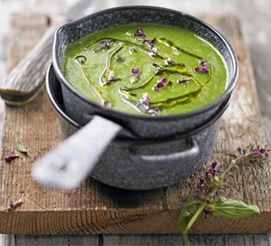

Nettle Soup

Description
Get your gloves on to forage for wild plants like nettles - once cooked they have a spinach or cabbage flavour
Ingredients
- 1 tbsp olive oil, plus extra for drizzling
- 1 onion, chopped
- 1 carrot, diced
- 1 leek, washed and finely sliced
- 1 large floury potato (Maris Piper or similar), thinly sliced
- 1l vegetable stock
- 400g stinging or Dead nettles, washed, leaves picked (see tips below)
- 50g butter, diced
- 50ml double cream
Steps
- Heat the oil in a large saucepan over a medium heat. Add the onion, carrot, leek and potato, and cook for 10
mins until the vegetables start to soften. Add the stock and cook for a further 10-15 mins until the potato
is soft.
- Add the nettle leaves, simmer for 1 min to wilt, then blend the soup. Season to taste, then stir in the
butter and cream. Serve the soup drizzled with extra oil and scattered with dead nettle flowers, if you have
them.